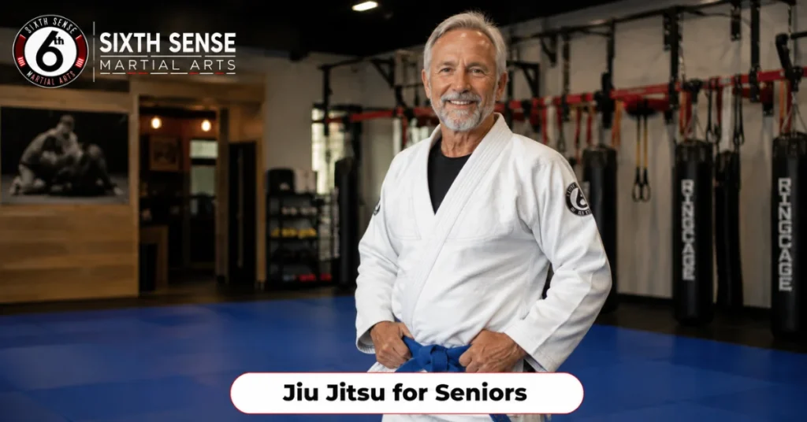
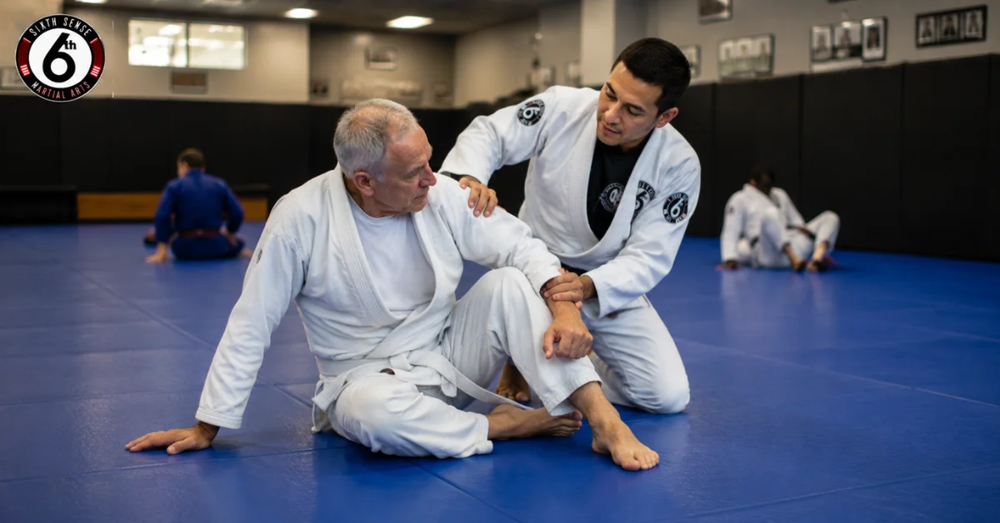
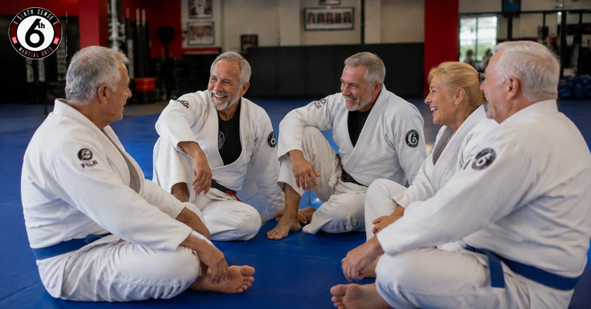

Jiu Jitsu for Seniors Stay Fit Strong and Confident at Any Age

Is Jiu Jitsu Really for Older Adults
Jiu jitsu for seniors is one of the most powerful decisions an older adult can make for their long term health and confidence. Many people assume martial arts are only for the young but that could not be further from the truth. Brazilian Jiu-Jitsu is built entirely around technique, leverage, and strategy rather than raw strength or speed. Therefore it is one of the very few martial arts that genuinely works for people at any age and fitness level. Furthermore research from Southern Cross University confirms that BJJ delivers cardiovascular exercise and meaningful resistance training for older adults. At Sixth Sense Martial Arts in Coppell, TX, we welcome seniors onto the mat every single week and the results speak for themselves.
How Jiu Jitsu Keeps Seniors Physically Strong
One of the most immediate reasons seniors choose jiu jitsu is the profound impact it has on physical health. Training involves grappling, rolling, positional drills, and partner work that build muscle strength and improve joint mobility simultaneously. Moreover because BJJ is low impact by nature it places far less stress on the body than high intensity sports like running or weightlifting. As a result seniors with varying fitness levels can participate comfortably and progress at their own pace. Additionally consistent training improves cardiovascular endurance in a genuinely engaging way. Furthermore joint health in key areas like the hips, knees, and shoulders improves significantly through the controlled range of motion that jiu jitsu naturally demands during every class.
Balance Coordination and Fall Prevention Through BJJ
As people age, balance and coordination naturally decline and the risk of falls increases considerably. However jiu jitsu for seniors training directly addresses this challenge in a genuinely practical way. Seniors learn proper falling techniques from their very first classes which dramatically reduces the risk of injury in real life situations. Furthermore the grappling movements involved in BJJ strengthen the stabilizer muscles responsible for balance and coordination throughout the entire body. Consequently seniors who train consistently develop a more confident and controlled way of moving both on and off the mat. In addition the body awareness gained through jiu jitsu practice carries over into daily activities making everyday life noticeably safer and more comfortable for older adults.

Flexibility and Mobility Gains That Last
Flexibility is one of the first things people lose as they get older and its absence makes everyday life increasingly limiting. Fortunately jiu jitsu for seniors is one of the most effective ways to reclaim and maintain flexibility at any age. Every class begins with a thorough warm up that guides joints through their full range of motion. Moreover the rolling and positional movements in BJJ naturally stretch muscles and connective tissue often neglected in standard gym workouts. As a result students notice meaningful improvements in their ability to move freely within just the first few weeks. Additionally improved flexibility reduces chronic pain in common problem areas like the lower back, hips, and shoulders which seniors most commonly report discomfort in.
Mental Sharpness and Cognitive Benefits of BJJ
The physical benefits of jiu jitsu for seniors are impressive but the mental benefits are equally remarkable and often the most surprising. Jiu jitsu is frequently described as a physical game of chess because every roll requires constant problem solving, strategic thinking, and quick decision making. Therefore training regularly keeps the mind sharp and engaged in a way that passive activities simply cannot match. Furthermore learning new techniques stimulates neuroplasticity which is the brain’s ability to form new connections over time. This is particularly valuable for older adults looking to maintain cognitive sharpness as they age. Additionally the focus required during training provides a natural mindfulness that reduces anxiety and promotes genuine calm and mental clarity after every session.
Stress Relief and Emotional Wellbeing on the Mat
Life does not get less stressful simply because you get older. Many seniors carry significant emotional burdens including loneliness, loss, and the anxiety that comes with aging. Jiu jitsu for seniors training addresses emotional wellbeing in a way that goes far beyond standard exercise. Physical training releases endorphins naturally which immediately elevate mood and reduce stress levels. Moreover the focus required during rolling and drilling leaves no mental space for worry or rumination. As a result many senior practitioners report feeling noticeably lighter and more positive after every class. Furthermore the sense of achievement that comes from mastering a new technique builds genuine self esteem and confidence that carries directly into daily life outside the gym.
Building Real World Self Defense Skills
Personal safety becomes an increasing concern for many older adults especially those who live alone or spend time in public spaces. One of the most practical benefits of jiu jitsu for seniors is the development of real world self defense skills that actually work. Because BJJ is built on leverage and technique rather than strength, seniors can effectively manage and escape threatening situations regardless of size or age. Additionally the situational awareness developed through consistent training helps practitioners recognize and avoid dangerous situations before physical contact becomes necessary. Furthermore knowing that you have the skills to protect yourself creates a lasting sense of confidence that positively affects how seniors carry themselves in every area of daily life.
The Community and Social Benefits of Jiu Jitsu
Isolation and loneliness are serious health risks for older adults and their impact on wellbeing is well documented. Jiu jitsu training offers seniors something most exercise routines completely overlook which is genuine human connection and community. Every class involves partner work which naturally creates bonds between training partners over time. Moreover the shared experience of learning something challenging together forms friendships that extend well beyond the mat. At Sixth Sense Martial Arts in Coppell, TX, seniors become part of a warm and welcoming community where every member genuinely supports each other. Furthermore the gym draws students from Coppell, Irving, Carrollton, Grapevine, and the broader DFW area creating a diverse and vibrant senior training community.

What to Expect in Your First Senior BJJ Class
Walking into a martial arts gym for the first time can feel intimidating but the reality at Sixth Sense Martial Arts is far more welcoming than most people expect. Classes begin with a gentle warm up designed to ease the body into movement safely. Additionally instructors tailor the pace and intensity to match each individual student’s current fitness level and physical condition. No prior experience is required and no one expects perfection on day one. Furthermore training partners are carefully selected to ensure new seniors work with patient and supportive teammates from the very start. The atmosphere is encouraging, respectful, and genuinely enjoyable making most new students eager to come back for their very next session.
Tips for Seniors Starting Jiu Jitsu Safely
Starting jiu jitsu as a senior is absolutely achievable but a few smart habits make the experience safer from the beginning. First always consult your doctor before starting especially if you have existing joint or cardiovascular conditions. Second communicate openly with your instructor about any physical limitations before your first class. Third prioritize warming up thoroughly and never skip the cool down at the end of each session. Additionally listen to your body carefully and give yourself adequate rest between training days in the early weeks. Furthermore invest in proper protective gear including knee support and comfortable training attire. Consistency combined with patience is always the winning formula for seniors who are just starting their jiu jitsu journey.
Why Sixth Sense Martial Arts Is the Right Place for Seniors
Choosing the right gym is the single most important decision a senior can make when starting jiu jitsu. Sixth Sense Martial Arts in Coppell, TX, is designed to serve students of all ages including older adults who are completely new to martial arts. Head coach Matheus brings over 15 years of hands-on BJJ experience and a genuine passion for age-appropriate instruction. Moreover the facility features clean modern mats, excellent air conditioning, and a layout that prioritizes comfort and safety. Additionally the flexible class schedule includes morning and evening sessions that suit retired adults and working seniors alike. The gym serves Coppell, Valley Ranch, Irving, Carrollton, Grapevine, and Lewisville making it easily accessible across the entire DFW area.
Conclusion
Jiu jitsu for seniors is not just possible. It is genuinely transformative in ways that go far beyond physical fitness alone. From improved strength, flexibility, and balance to sharper mental clarity, reduced stress, real self defense skills, and a vibrant social community, the benefits of BJJ for older adults are both wide ranging and deeply meaningful. Moreover age is never a barrier on the mat because jiu jitsu is built on technique and intelligence rather than youth and brute force. At Sixth Sense Martial Arts in Coppell, TX, we have seen seniors discover capabilities they never imagined possible. Therefore if you have been considering starting your jiu jitsu for seniors journey there is absolutely no reason to wait. Come in for a free trial class today and experience what training at any age truly feels like.
Contact Us
Have questions about our senior jiu jitsu classes in Coppell? We would love to hear from you and help you take the first step toward a stronger and more confident life on the mat.
Follow Us on Social Media
Stay connected with the Sixth Sense Martial Arts community. Follow us for senior training highlights, class schedules, student success stories, and special offers.
FAQ’s
Yes, BJJ is low impact and built on technique rather than force.
There is no age too old to start. People have begun BJJ in their 60s and 70s with remarkable results. The IBJJF even has dedicated Masters divisions for older practitioners.
Two to three sessions per week is ideal for most seniors. This allows steady progress while giving the body enough rest and recovery time between training days.
Yes, BJJ teaches proper falling techniques and strengthens stabilizer muscles which directly improves balance, coordination, and physical confidence in everyday life situations.
Yes, coaches modify techniques to accommodate joint sensitivities. Consistent training often reduces chronic joint discomfort over time by improving surrounding muscle strength and mobility.
Comfortable athletic clothing is perfectly fine for the first class. Supportive footwear and any personal joint supports like knee braces are also recommended for added comfort.
Train with us in Coppell
The first class is free. Shorts, a t-shirt and a water bottle. We lend the rest.
Book a free class